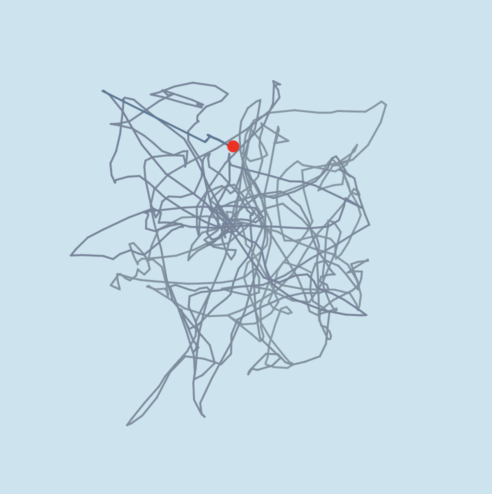

I learned ice skating a long time when I was younger, and I always enjoyed skating. When I skate, I feel like the time passes so fast that I didn't even notice. I only know that it's time for my skating rehearsal when the resurfacer comes. So I made a skating time clock. When the skater moves, it will leaves traces on the ice, and the ice color becomes darker over an hour. The resurfacer comes every hour to make the ice clean again.
